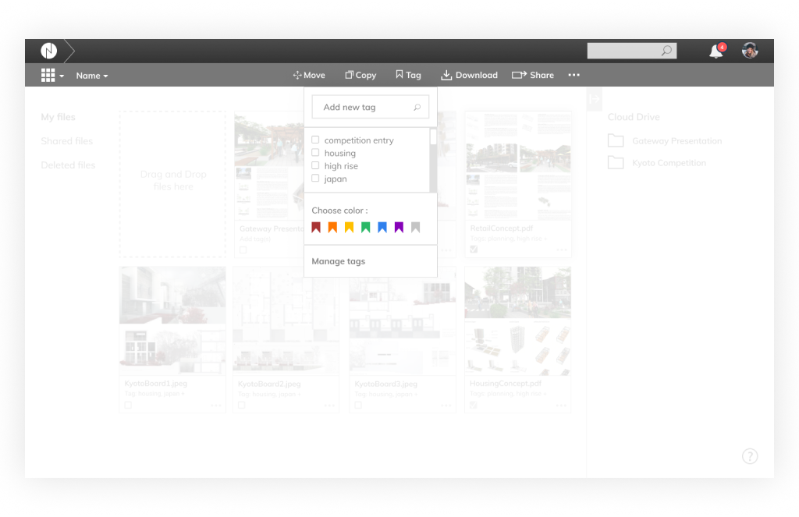
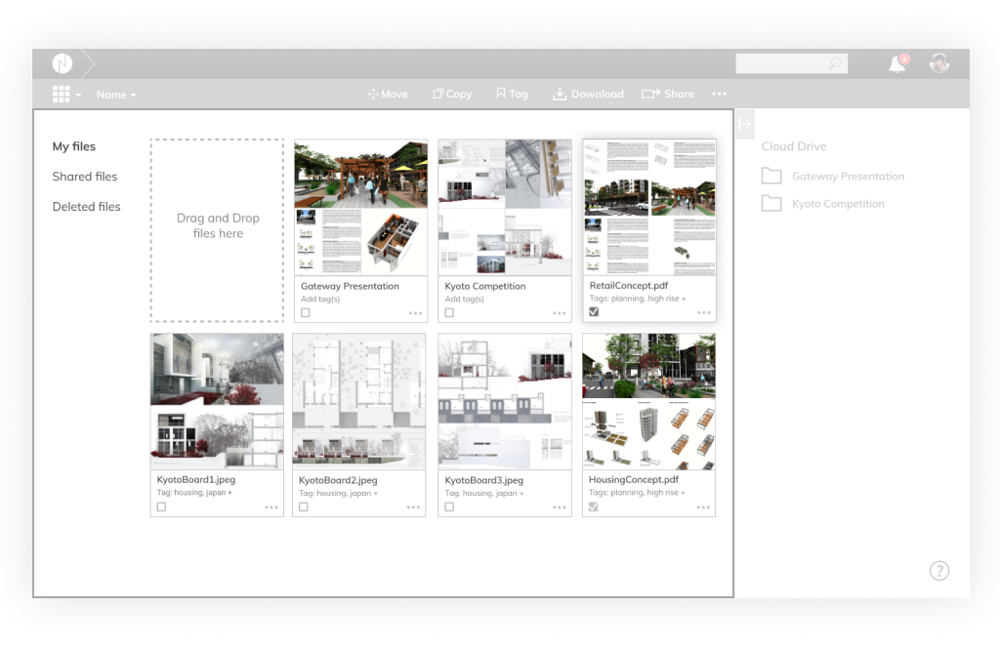
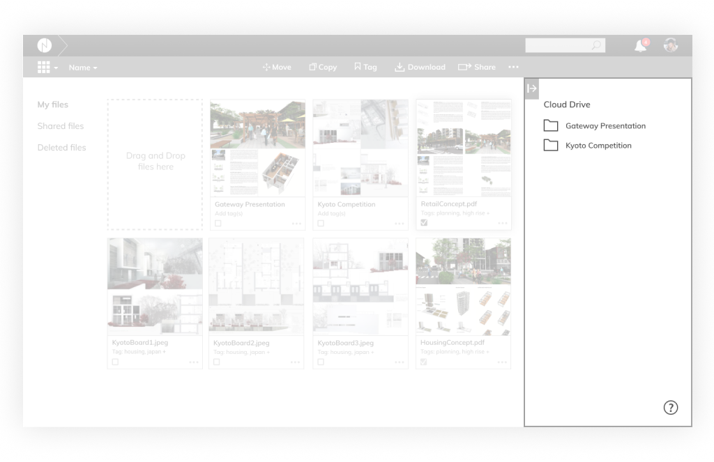
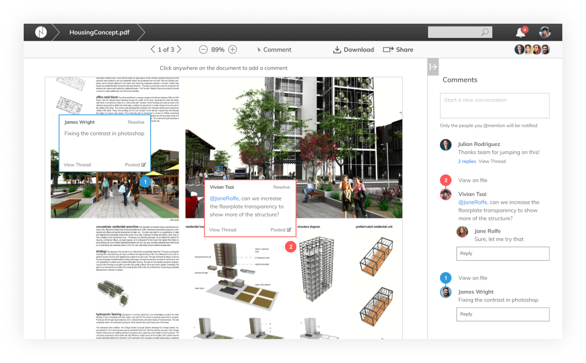
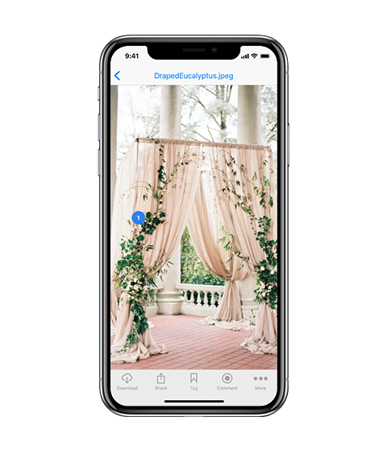
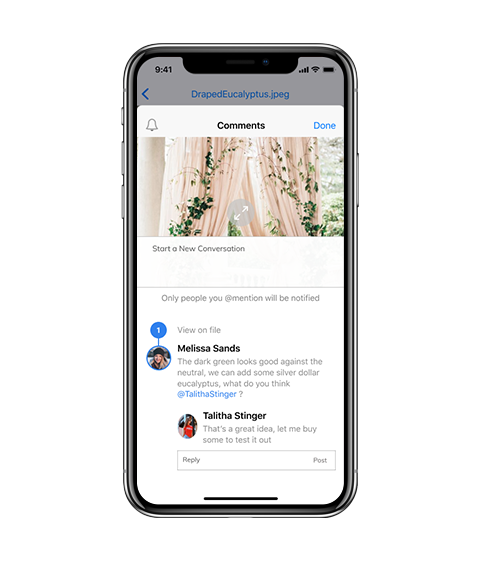

A collaboration platform for the creative process
ROLES
- UX Designer
- Visual Design
DELIVERABLES
- User Surveys
- Personas
- Competitive Analysis
- User Stories
- User Flows
- Wireframes
- User Testing
- Visual Design
- InVision Prototype
SPECIFICATIONS
DURATION
- 5 Weeks
TOOLS
- Figma
- InVision
- UsabilityHub
- Draw.io
- Adobe Photoshop
CONTEXT
The Problem
The creative process is iterative in nature, it thrives on an efficient feedback system as well as an effective organization method that enhance rather than hinder the creative workflow. Currently, the creative community is hard-pressed to find a cloud collaboration platform that combines robust commenting features with advanced file organization capabilities.
Platforms such as Evernote may have great organization capabilities (i.e. searchable tags) but they are lacking in commenting features that facilitate efficient feedback. Platforms such as Dropbox, InVision, and RedPen have powerful commenting features, but their file organization capabilities lack flexibility, restricting users to organize by nested folders.
The Solution
Nimbus is a cloud collaboration platform designed with the creative process in mind. It combines advanced commenting features with flexible file organization capabilities that can handle the non-linear nature of the design process and enhances the feedback loop.
VIEW THE INVISION PROTOTYPEPROCESS
User Research
A survey was deployed to quantify user's preferences of features for a cloud collaboration platform. I also conducted a competitive analysis between four leading platforms and identified a growing trend towards more advanced commenting features that allow users to track conversation histories in their shared documents. Survey results also revealed that users are looking for more ways to organize their files to enhance their workflow.
Competitive Analysis
I conducted a competitive analysis between four leading platforms and identified a growing trend towards more advanced commenting features that allow users to track conversation histories in their shared documents. As I studied the competition, I was fascinated by the use of vertical versus horizontal toolbars. I also identified similarities, such as the tendency to put location-based links along the left-aligned toolbar pane.
Synthesizing User Flows
After scrutinizing the layout and navigation structure of several cloud platforms, I synthesized my research into a series of user flows and wireframes that begin to inform the layout of modal windows and comment prompts.

Early Wireframes
I constructed a series early wireframes that were inpired by cloud storage platforms I analyzed during the competitive analysis phase of the project.
I tested a vertical toolbar layout that was utilized by Mega and MediaFire.
I also tested horizontal toolbar layouts that platforms such as InVision, Dropbox, and Redpen utilized.
First Round of User Testing
This initial round revealed that users do not look for high-use functions like ‘upload’ along the bottom navigation bar. They expect it at the top bar or somewhere along the top half of the screen.
I learned that icons mean different things to different people, and that labeling a button by text clarifies it that much more for the user. I also learned the importance of locating file paths ("breadcrumbing") on the top portion of the screen.
Second Round of User Testing
Most users do not connect clicking a button in one location that affects the changes in another area of the screen. To them, it is as if their action does not generate a response and it becomes a frustrating experience to use the dashboard.
Consistent with the gestalt principle of proximity, it is best to put icons and functions on the same location as the pane or section of the dashboard that it affects.
DESIGN
Dashboard Components
After scrutinizing the layout and navigation structure of several cloud platforms and validating design decisions after several rounds of user-testing, a clean dashboard design with a top horizontal toolbar and a right-aligned support pane prove to be the most effective.
Primary Controls
Breadcrumbing as a primary navigation tool is essential in a file organization software whose files can be buried several levels deep within folders. User tests reveal that the optimal location for file paths is at the top left portion of the screen.
Anticipating the user’s next actions allow for a responsive rather than a static set of toolbars. If the user has not made any file selections, then they are likely to upload or create a new folder.
Once file selections have been made, the tab bar switches to a series of functions that the user is likely to want to do next.

Location Pane and Primary Pane
Frequently-visited locations are located along the left edge of the dashboard. Rather than placing a list of file locations on an adjacent sidebar and creating a visual separation (Dropbox and Google Drive took this approach), I opted to remove any visual separation from the screen section that will be affected once a user makes a location selection.
Support Pane
This collapsible pane houses secondary functions that enhances but are not essential to the majority of user tasks. For instance, it displays the cloud file organization tree in ‘location mode’, and the comment summary in ‘comment mode.’
Document Commenting Feature
I conducted a competitive analysis between four leading platforms and identified a growing trend towards more advanced commenting features that allow users to track conversation histories in their shared documents. Users can choose between commenting on specific document locations, or starting general conversations that apply to the entire document.
Mobile App Components
The Nimbus mobile app is designed to give users the same powerful organization and collaboration features that the Nimbus desktop counterpart offers.
The concept of the responsive toolbar translates into a responsive set of tab bars. When loading the app, the tab bars display frequently-accessed locations—thereby flattening the app structure.
Anticipating the user’s next actions allow for a responsive rather than a static tab bar. Once file selections have been made, the tab bar switches from location-based functions to action-based functions.
 In comment-mode, the tab bar adapts to anticipate the user’s next actions after opening a file.
CONCLUSION
I learned the most during wireframe iterations.
During user-testing, I learned the hard way that icons mean different things to different people, that labeling a button by text clarifies it that much more for the user. I also learned the studying the dashboard platforms that most users are accustomed to is a great starting point, often times we never reinvent the wheel, we just adjust the pattern if it brings value to the user’s workflow.
Breadcrumbing as a primary navigation tool is essential in a file organization software whose files can be buried several levels deep within folders. Although it is graphically cleaner to put the file path breadcrumbing along the bottom navigation bar, users had trouble locating it. I learned the hard way that users do not look for high-use functions like ‘upload’ along the bottom navigation bar. They expect it at the top bar or somewhere on the top heading of the screen.
As I watched people struggle with knowing where to click next when leaving a comment, I learned the importance of visual responsiveness to a user’s action. Particularly in letting the user know that the task they attempt to do is complete. This was particularly true for the ‘post’ buttons in comments. Consistent with the gestalt principle of proximity, it is best to put icons and functions on the same location as the pane or section of the dashboard that it affects. Most users do not connect clicking a button in one location that affects the changes in another area of the screen. To them it is as if their action does not generate a response and it frustrates them to click and unclick to figure out what changed.